<ion-header class="home-header">
  <ion-toolbar>
    <ion-title class="home-title">
      
    </ion-title>
  </ion-toolbar>
</ion-header>

<ion-content [fullscreen]="true" class="home-content ion-padding">
  <div class="container">
    <div class="columns is-centered">
      <div class="column is-half">
        <!-- Mostrar el botón para cargar la imagen -->
        <div *ngIf="!selectedImage" class="gallery-button notification is-warning has-text-centered">
          <input class="file-input" type="file" accept="image/*" (change)="onFileSelected($event)">
          <ion-icon name="images-outline" class="fa-lg"></ion-icon>
          <p class="mt-2">Sube tu imagen</p>
        </div>
        <!-- Mostrar la imagen cargada y los botones de acción -->
        <div class="has-text-centered" *ngIf="selectedImage">
          <!-- Imagen cargada -->
          
          <!-- Filtros -->


          <div class="scrolling-wrapper">
            <div class="filter-buttons mt-2">
              <!-- Filtros -->
              <button class="filter-button" (click)="applyFilter('grayscale')">Grayscale</button>
              <button class="filter-button" (click)="applyFilter('sepia')">Sepia</button>
              <button class="filter-button" (click)="applyFilter('blur')">Blur</button>
              <button class="filter-button" (click)="applyFilter('invert')">Invertir colores</button>
              <button class="filter-button" (click)="applyFilter('min-saturate')">Saturación mínima</button>
              <button class="filter-button" (click)="applyFilter('low-contrast')">Contraste bajo</button>
              <button class="filter-button" (click)="applyFilter('blacklight')">Luz negra</button>
        </div>
          </div>
          <!-- Botones -->
          <div class="footer-buttons ion-fixed">
            <i class="delete-icon fa-regular fa-trash-can" style="color: #fb0404;" (click)="deleteImage()"></i>
            <i class="action-icon fa-solid fa-share" style="color: #FFD43B;"></i>
            <i class="action-icon fa-solid fa-file-arrow-down" style="color: #FFD43B;" (click)="downloadImage()"></i>
            <i class="fa-regular fa-pen-to-square" style="color: #74C0FC;"></i>
          </div>
        </div>
      </div>
    </div>
  </div>
</ion-content>
